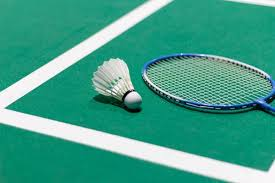

Saya adalah Erlangga seorang pelajar di Sekolah Menengah Kejuruan Negeri-9,
saya bersekolah dengan jurusan rpl, di jurusan ini saya dapat banyak pelajaran,
bukan hanya mengenai teknologi seperti Website, App, Data Base, tapi juga mengenai
logika, pemecahan masalah dan seni.
Hobi

Salah satu hobi saya adalah bermain raket/badminton,
saya mulai bermain badminton sejak saya SD, awalnya saya hanya iseng coba coba eh malah jadi hobi, karena itu sampai sekarang saya masih sangat menyukai badminton
Buat yang baru mau coba, badminton itu gampang dipelajari. Nggak perlu teknik yang ribet dulu, cukup ngerti cara nyervis kok dan mukulnya supaya nggak jatuh ke tanah. Lama-lama, refleks kita makin terasah. Yang bikin seru, kita bisa main bareng teman atau keluarga. Nggak perlu banyak orang, dua orang buat single match atau empat orang buat double udah cukup bikin keringetan.
Selain bikin badan bergerak, badminton juga bagus banget buat melatih fokus dan konsentrasi. Pas main, kita harus perhatiin gerakan lawan dan nebak arah kok. Kalau refleks kita lambat, bisa-bisa poin jatuh ke lawan. Makanya, hobi ini secara nggak langsung ngajarin kita buat berpikir cepat dan ambil keputusan dalam waktu singkat.
Yang lebih asik lagi, badminton itu fleksibel. Mau main santai sambil ngobrol, oke. Tapi, kalau mau serius tanding buat cari keringat atau bahkan ikut turnamen lokal, juga bisa. Banyak komunitas badminton yang sering ngadain turnamen kecil-kecilan. Ikut kegiatan kayak gini bikin kita makin semangat karena selain tanding, kita juga bisa kenalan sama banyak orang yang punya minat sama.
Pelajaran Favorit
Matematika itu sering dianggap pelajaran yang sulit, tapi justru di situlah letak serunya. Setiap soal matematika seperti teka-teki yang menantang untuk dipecahkan. Kalau berhasil menyelesaikan soal sulit, rasanya puas banget, seperti memenangkan sebuah tantangan.
Matematika bukan cuma soal angka, tapi juga mengajarkan cara berpikir logis dan terstruktur. Ketika belajar rumus atau konsep, kita jadi paham gimana langkah-langkah untuk menyelesaikan masalah, baik di soal maupun dalam kehidupan sehari-hari. Misalnya, konsep perhitungan dalam matematika bisa membantu kita mengelola keuangan atau memperkirakan sesuatu dengan lebih akurat.
Selain itu, matematika juga membuka banyak peluang. Banyak bidang pekerjaan seperti teknik, teknologi, ekonomi, bahkan seni, membutuhkan pemahaman matematika. Pelajaran ini juga membantu melatih ketelitian, ketekunan, dan fokus—keterampilan yang sangat berguna di mana saja.
Makanan Favorit
Nasi goreng emang jadi makanan favorit banyak orang, termasuk gue. Rasanya yang enak, bumbu yang pas, dan bisa dipadukan dengan berbagai macam topping, bikin nasi goreng gak pernah bosen. Dari yang simple kayak nasi goreng kampung, sampai yang spesial dengan seafood atau ayam, semuanya enak banget. Enaknya lagi, nasi goreng bisa dimakan kapan aja, baik pagi, siang, atau malam. "You know what? Nasi goreng is like comfort food, nggak ada yang bisa ngalahin rasanya!" Pokoknya, nasi goreng tuh makanan yang selalu bisa bikin gue senyum. Buat gue, ini bukan cuma makanan, tapi juga kenangan.
Pengalaman
Pengalaman saya sangat beragam dan penuh tantangan. Salah satunya adalah ketika saya bergabung dengan pramuka, yang mengajarkan saya banyak hal tentang kerja sama, kepemimpinan, dan disiplin. Selama menjadi anggota pramuka, saya tidak hanya belajar tentang keterampilan alam, tetapi juga bagaimana bekerja dalam tim untuk mencapai tujuan bersama. Selain itu, saya juga saat ini aktif dalam organisasi OSIS di SMKN-9, di mana saya terlibat langsung dalam pengelolaan dan perawatan sarana dan prasarana sekolah sebagai anggota seksi sarana prasarana. Pengalaman ini telah banyak mengasah kemampuan saya dalam manajemen, perencanaan, dan pengelolaan sumber daya.
Selain aktivitas organisasi, saya juga memiliki ketertarikan yang besar terhadap alam, terutama pendakian gunung dan bertanam. Pendakian gunung telah memberikan saya banyak pengalaman berharga dalam mengatasi tantangan fisik dan mental. Setiap perjalanan ke puncak gunung bukan hanya tentang menikmati keindahan alam, tetapi juga tentang belajar menghadapi rintangan dan memahami betapa kecilnya diri kita di tengah luasnya alam. Saya juga sangat menikmati kegiatan bertanam, yang menurut saya adalah cara terbaik untuk lebih terhubung dengan alam. Melalui bertanam, saya belajar tentang kesabaran, perawatan, dan bagaimana menciptakan sesuatu dari nol. Alam memberikan rasa ketenangan yang luar biasa, dan itulah yang membuat saya merasa hidup dan damai setiap kali berada di sana.
Selain pendakian dan bertanam, saya sangat menghargai kegiatan-kegiatan yang menghubungkan saya dengan lingkungan sekitar. Aktivitas-aktivitas ini tidak hanya memberi saya kepuasan pribadi, tetapi juga memperkaya perspektif saya tentang kehidupan, tanggung jawab terhadap alam, dan pentingnya menjaga keseimbangan antara manusia dan lingkungan. Setiap petualangan di alam atau setiap benih yang saya tanam adalah bagian dari perjalanan panjang yang mengajarkan saya untuk lebih bersyukur dan menghargai kehidupan.